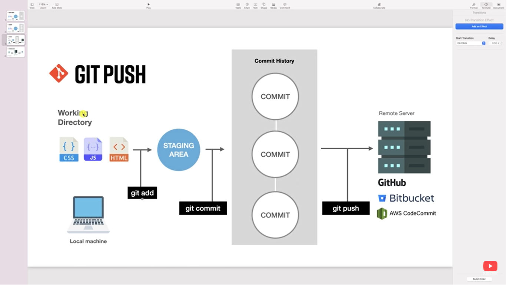

Introduction
Before we start this command list. Here are some of the most
useful CMD or key actions that you can use on the CLI.
- CTR-L = To clear screen in bash
- ls = to list directory item
- echo = print text on terminal
- touch = Creates a file
- mkdir = Create a directory
- cd = Change directory
- rmdir = remove directory
- cat = creating new files
You can also install the Github Desktop even though we are
using a bash CLI here. just to make you familiarize how the Git work
first then the Github desktop later. Of course install the Git on your
local machine. 😉
I highly recommend you to check out this git repository which is
called firstcontributions it is like a simple
walkthrough on how to work with git
Most of all ofcourse I want you to check this Git tutorial from
Amigoscode as this is where I got some of the idea to write
this page.
Other Useful sites:
Get started
How git works?
Here as we can see git only works in our local machine it is
like a save point to our file on what we have already done from
our directory. Now the github ( also there many remote
repository like GitLab ) is our remote repository in where we
can share and collaborate with other people even though they
far.

Amigoscode
Create a configuration on Git
Now to get started we need to setup our simple
git configuration in order to do that follow the cmd below:
~git config --global user.name "anyname"
~git config --global user.email "email@email.com"
~git config --global color.ui auto
👆 That creates a configuration about our git this includes our
name, email, color of ui. Too view all the option or help for
git configuration just type "git config". Now since we save the
configuration we can view all the configuration we made using:
Create a new project in local machine
GIT Init
Now it is our first time to create our own local project in our
machine of course we can do by making a folder and inside of that
folder we add some files. go to your desired directory first then
create a folder inside or type below the command:
cd ./Desktop
mkdir git-folder
cd ./git-folder
👆 Here the first line is where we change our directory then in that
directory we make a folder name git-folder. Then we change our current
directory into that created directory which is the git-folder. Now in
order to make that directory as a working directory for our git we
need to do:
git-folder
git:(master) ls -a
👆 that will initiliaze our empty git repository. now we can issue
some git command here inside of that folder. Also note
"git init ." only works on new project. We can also view
what's inside of working directory by typing "ls -a". Now if we
remove the .git by doing:
git-folder
git:(master) rm -rf .git
git-folder |
git-folder git add
fatal: not a git repository (or any of the parent directories): .git
git-folder |
To fix that we have to do again the git init .
Adding our files into staging area
GIT Add
Now what we want is to create a file inside on our working directory we do that by doing in windows
( right-click / new / text document ) or by doing that touch command:
git-folder git:(master) touch index.html
git-folder git:(master) touch index.js
git-folder git:(master) touch main.css
git-folder git:(master) ls
index.html index.js main.css
git-folder git:(master) |
git-folder git:(master) git status
On branch master
No commits yet
Untracked files:
(use "git add <file>..." to include in what will be committed )
index.html
index.js
main.css
nothing added to commit but untrackted files present (use "git add" to track)
git-folder git:(master) |
"git status" shows the current state of your git working directory and staging area.
cmd that shown below is in order with example in order
To add a file on staging area do "git add"
To remove a file on staging area do "git rm --cache <file>" to unstage
To add all file downward on current directory "git add ."
To remove multiple file in staging area "git rm -r --cached ." the -r means recursive.
git-folder git:(master) git add index.html
git-folder git:(master) git status
On branch master
No commits yet
Changes to be committed:
(use "git rm --cache <file>..." to unstage)
new file: index.html
Untracked files:
(use "git add <file>..." to include in what will be committed)
index.js
main.css
git-folder git:(master) |
git-folder git:(master) git rm --cache
index.html
git-folder git:(master) |
git-folder git:(master) git add .
git-folder git:(master) |
git-folder git:(master) git rm -r --cache
.
git-folder git:(master) |
Now "git add ." only works if all of our file is inside of our own current directory but what if we use
the "git add ." while
we are inside of another folder of our current directory?
Let us first create another folder and a file inside of our local repository
git-folder git:(master) mkdir test
git-folder git:(master) cd test
test git:(master) touch test.js
test git:(master) |
test git:(master) git status
On branch master
No commits yet
Untracked files:
(use "git add <file>..." to include in what will be committed)
../index.html
../index.js
../main.css
./
nothing added to commit but untrackted files present (use <git add> to track)
test git:(master) |
test git:(master) git add .
On branch master
No commits yet
Changes to be committed:
(use "git rm --cache <file>..." to unstage)
new file: test.js
Untracked files:
(use "git add <file>..." to include in what will be committed)
../index.html
../index.js
../main.css
test git:(master) |
If we are inside of another folder we can't "git add ." the outside file if
we use the "git add ." previous directory file is not added to staging and only the current folder that we are
in.
To add all changes on staging area we do: "git add -A" -A must be in capital
git-folder git:(master) git add -A
From Staging area to Commit
GIT Commit
Now that we know how to add all of our changes in our staging area it is now time to save (save point) it in
our local machine by doing the "git commit".
We can have many commit as long as we want to commit.
test git:(master) cd ../
git-folder git:(master) git commit -m
"bootstrap project"|
Summary
CMD list for GIT and GITHUB
- git config - create configuration for git
- git config -l - view configuration of git
- git status - To check the status of current directory and staging area:
- git init - Initialize folder as working directory for git
- git add . - Add all file in the current directory to staging area
- git rm --cached <file> - To unstage file
- git add -A - Add all file event the previous directory (whole working
directory) to staging area
- git commit -m "message here" - Commit the stage file (save point)
- git log - Check all of our commit status in branch
- git log --oneline - View all our commit status in branch that look like
one line
- git show <hash> - To view all the files in commit we can
use the hash commit from git log
- git diff - view the changes or different from current to previous file
- git restore - restore and discard the changes on file using our last
commit (save point)
- git commit --amend -m "message for new amended commit" - If we make make
mistake from our commit we can change it then save it without creating a new commit
- git config - create configuration for git
-
-git remote add origin <url>
-git branch -M main
-git push -u origin main
- To push an existing repository to github
- git branch -M main - To rename the master branch from main branch
- git branch - To view all branch
- git branch -r - To view all branch on remote repository
- git branch -a - To view all branches on local and remote repository
- git branch <branch-name> - To create a new branch
- git checkout <branch-name> - To switch between branch
- git switch <branch-name> - To switch between branch
- git checkout - - To switch on previous branch
- git switch - - To switch on previous branch
- git checkout -b <branch-name> - This create a new branch then
after that switch to this branch
- git checkout -d <branch-name> - To delete a branch
- git push -u origin <branch-name> - To push a repository on remote
- git push --set-upstream origin feature-a - To push a new branch along
with its file or you can use cmd "git push -u origin <branch-name>"
- git pull - To pull an update on remote repository to local repo
- git merge <branch-name> ⚠️ Don't use this
instead create a pull request - Merge main branch and current branch
- git pull -r origin main OR git pull --rebase
origin main - To pull and rebase from main branch to current working branch
- git rebase --continue - After fixing conflict continue rebase
- git merge --continue - After fixing conflict between merging then
continue
- git merge --abort - Abort merging if we don't want to fix conflict
- git reset --soft HEAD^ - Undo commit and keep the files (Also view the
other option for --soft)